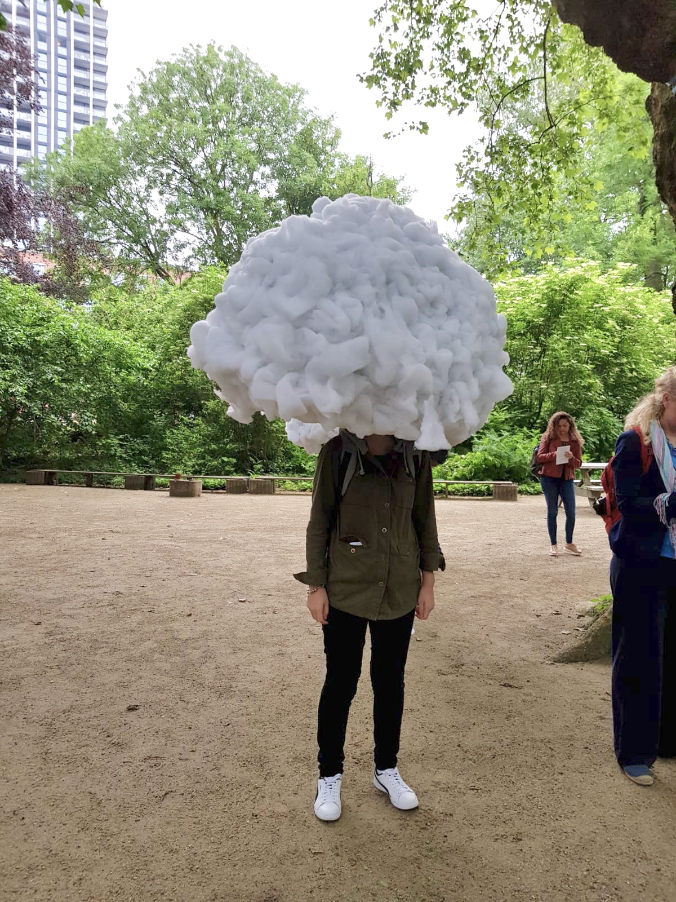

Excursion
Head in the clouds
By Mickaël Martins Afonso
Het werk van Mickaël Martins Afonso biedt een omgeving waar mensen afgezonderd kunnen zijn van prikkels, die door gevolg van verstedelijking, technologie en omgevingsgeluid zijn ontstaan. Deze prikkels kunnen een sensory overload veroorzaken – een verschijnsel dat optreedt wanneer een of meer lichamelijke zintuigen worden overprikkeld door omgevingsinvloeden. De rust van de natuurlijke omgeving is moeilijk te vinden binnen stedelijke gebieden, waardoor we soms de behoefte krijgen om onszelf te isoleren van deze hectische plekken. Head in the Clouds biedt mensen de ruimte om te reflecteren en te contempleren en dit zorgt voor een gevoel van opluchting. De installatie werkt door middel van een holle bol op te hangen rond schouderhoogte. Deze bol is bedekt met een materiaal waardoor het van buitenaf op wolken lijkt en van binnen op een holle ruimte lijkt. Er is aan de binnenkant meer ruimte dan verwacht en geeft ook het gevoel alsof je in je eigen ruimte zit, alleen en geïsoleerd van de omgeving.
Ik vind dit project erg interessant, omdat Head in the Clouds een simpele maar effectieve oplossing levert. Dagelijks zijn komen de in contact met verschillende prikkels, zoals geluid van auto’s die langsrijden, het licht van stoplichten die knipperen, fietsers waar we op moeten letten en mensen die langs ons lopen. Voor veel dingen zijn wij niet bewust van, maar we krijgen wel binnen wat er gebeurt en daarop wordt onbewust op gereageerd. Door onszelf voor een moment te isoleren in Head in the Clouds, krijgen we voor een moment rust. Het is dan mogelijk om te denken over mijzelf en om in mijn eigen gedachte te verdrinken. Daarnaast biedt dit project de mogelijkheid om interessante foto’s te maken. Doordat de wolk boven je schouders zweeft, zit je hoofd letterlijk in de wolken en dit zorgt voor een interessante compositie in foto’s.

Reflect
De excursie had veel interessante en inspirerende installaties. Het leuke aan de excursie was dat ik in contact kwam met de makers achter het werk en dat ieder werk weer een ander probleem aanpakt. Deze aanpak heeft geresulteerd in een oplossing en dit liet mij als bezoeker zien hoe de makers ernaar keken. Daarnaast was dit een goede inspiratie moment en kreeg ik een golf aan ideeën bij iedere installatie die ik bezocht.